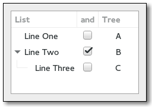

Gtk.TreeView
Example
Methods
| Inherited: | Gtk.Container (27), Gtk.Widget (256), GObject.Object (33), Gtk.Buildable (10), Gtk.Scrollable (8) |
|---|
Virtual Methods
| Inherited: | Gtk.Container (10), Gtk.Widget (82), GObject.Object (7), Gtk.Buildable (10) |
|---|
| do_columns_changed() | |
| do_cursor_changed() | |
| do_expand_collapse_cursor_row(logical, expand, open_all) | |
| do_move_cursor(step, count) | |
| do_row_activated(path, column) | |
| do_row_collapsed(iter, path) | |
| do_row_expanded(iter, path) | |
| do_select_all() | |
| do_select_cursor_parent() | |
| do_select_cursor_row(start_editing) | |
| do_start_interactive_search() | |
| do_test_collapse_row(iter, path) | |
| do_test_expand_row(iter, path) | |
| do_toggle_cursor_row() | |
| do_unselect_all() |
Properties
| Inherited: | Gtk.Container (3), Gtk.Widget (38), Gtk.Scrollable (4) |
|---|
| Name | Type | Flags | Short Description |
|---|---|---|---|
| activate-on-single-click | bool | r/w | Activate row on a single click |
| enable-grid-lines | Gtk.TreeViewGridLines | r/w | Whether grid lines should be drawn in the tree view |
| enable-search | bool | r/w | View allows user to search through columns interactively |
| enable-tree-lines | bool | r/w | Whether tree lines should be drawn in the tree view |
| expander-column | Gtk.TreeViewColumn | r/w | Set the column for the expander column |
| fixed-height-mode | bool | r/w | Speeds up Gtk.TreeView by assuming that all rows have the same height |
| headers-clickable | bool | r/w | Column headers respond to click events |
| headers-visible | bool | r/w | Show the column header buttons |
| hover-expand | bool | r/w | Whether rows should be expanded/collapsed when the pointer moves over them |
| hover-selection | bool | r/w | Whether the selection should follow the pointer |
| level-indentation | int | r/w | Extra indentation for each level |
| model | Gtk.TreeModel | r/w | The model for the tree view |
| reorderable | bool | r/w | View is reorderable |
| rubber-banding | bool | r/w | Whether to enable selection of multiple items by dragging the mouse pointer |
| rules-hint | bool | r/w | Set a hint to the theme engine to draw rows in alternating colors |
| search-column | int | r/w | Model column to search through during interactive search |
| show-expanders | bool | r/w | View has expanders |
| tooltip-column | int | r/w | The column in the model containing the tooltip texts for the rows |
Style Properties
| Inherited: | Gtk.Widget (17) |
|---|
| Name | Type | Default | Flags | Short Description |
|---|---|---|---|---|
| allow-rules | bool | True | r | Allow drawing of alternating color rows |
| even-row-color | Gdk.Color | None | r | Color to use for even rows |
| expander-size | int | 14 | r | Size of the expander arrow |
| grid-line-pattern | str | '\x01\x01' | r | Dash pattern used to draw the tree view grid lines |
| grid-line-width | int | 1 | r | Width, in pixels, of the tree view grid lines |
| horizontal-separator | int | 2 | r | Horizontal space between cells. Must be an even number |
| indent-expanders | bool | True | r | Make the expanders indented |
| odd-row-color | Gdk.Color | None | r | Color to use for odd rows |
| tree-line-pattern | str | '\x01\x01' | r | Dash pattern used to draw the tree view lines |
| tree-line-width | int | 1 | r | Width, in pixels, of the tree view lines |
| vertical-separator | int | 2 | r | Vertical space between cells. Must be an even number |
Signals
| Inherited: | Gtk.Container (4), Gtk.Widget (69), GObject.Object (1) |
|---|
| Name | Short Description |
|---|---|
| columns-changed | The number of columns of the treeview has changed. |
| cursor-changed | The position of the cursor (focused cell) has changed. |
| expand-collapse-cursor-row | |
| move-cursor | The Gtk.TreeView ::move-cursor signal is a [keybinding signal][GtkBindingSignal] which gets emitted when the user presses one of the cursor keys. |
| row-activated | The “row-activated” signal is emitted when the method Gtk.TreeView.row_activated () is called, when the user double clicks a treeview row with the “activate-on-single-click” property set to False, or when the user single clicks a row when the “activate-on-single-click” property set to True. |
| row-collapsed | The given row has been collapsed (child nodes are hidden). |
| row-expanded | The given row has been expanded (child nodes are shown). |
| select-all | |
| select-cursor-parent | |
| select-cursor-row | |
| start-interactive-search | |
| test-collapse-row | The given row is about to be collapsed (hide its children nodes). |
| test-expand-row | The given row is about to be expanded (show its children nodes). |
| toggle-cursor-row | |
| unselect-all |
Fields
| Inherited: | Gtk.Container (1), Gtk.Widget (1), GObject.InitiallyUnowned (3), GObject.Object (3) |
|---|
| Name | Type | Access | Description |
|---|---|---|---|
| parent | Gtk.Container | r |
Class Details
- class Gtk.TreeView(model=None)
Bases: Gtk.Container, Gtk.Scrollable
Widget that displays any object that implements the Gtk.TreeModel interface.
Please refer to the [tree widget conceptual overview][TreeWidget] for an overview of all the objects and data types related to the tree widget and how they work together.
Several different coordinate systems are exposed in the Gtk.TreeView API. These are:

Coordinate systems in Gtk.TreeView API:
- Widget coordinates: Coordinates relative to the widget (usually `widget->window`).
- Bin window coordinates: Coordinates relative to the window that Gtk.TreeView renders to.
- Tree coordinates: Coordinates relative to the entire scrollable area of Gtk.TreeView. These
coordinates start at (0, 0) for row 0 of the tree.
Several functions are available for converting between the different coordinate systems. The most common translations are between widget and bin window coordinates and between bin window and tree coordinates. For the former you can use Gtk.TreeView.convert_widget_to_bin_window_coords () (and vice versa), for the latter Gtk.TreeView.convert_bin_window_to_tree_coords () (and vice versa).
# Gtk.TreeView as Gtk.Buildable
The Gtk.TreeView implementation of the Gtk.Buildable interface accepts Gtk.TreeViewColumn objects as elements and exposes the internal Gtk.TreeSelection in UI definitions.
An example of a UI definition fragment with Gtk.TreeView:
<object class="GtkTreeView" id="treeview"> <property name="model">liststore1</property> <child> <object class="GtkTreeViewColumn" id="test-column"> <property name="title">Test</property> <child> <object class="GtkCellRendererText" id="test-renderer"/> <attributes> <attribute name="text">1</attribute> </attributes> </child> </object> </child> <child internal-child="selection"> <object class="GtkTreeSelection" id="selection"> <signal name="changed" handler="on_treeview_selection_changed"/> </object> </child> </object>
- static new()
Returns: A newly created Gtk.TreeView widget. Return type: Gtk.Widget Creates a new Gtk.TreeView widget.
- static new_with_model(model)
Parameters: model (Gtk.TreeModel) – the model. Returns: A newly created Gtk.TreeView widget. Return type: Gtk.Widget Creates a new Gtk.TreeView widget with the model initialized to model.
- append_column(column)
Parameters: column (Gtk.TreeViewColumn) – The Gtk.TreeViewColumn to add. Returns: The number of columns in tree_view after appending. Return type: int Appends column to the list of columns. If tree_view has “fixed_height” mode enabled, then column must have its “sizing” property set to be Gtk.TreeViewColumnSizing.FIXED.
- collapse_all()
Recursively collapses all visible, expanded nodes in tree_view.
- collapse_row(path)
Parameters: path (Gtk.TreePath) – path to a row in the tree_view Returns: True if the row was collapsed. Return type: bool Collapses a row (hides its child rows, if they exist).
- columns_autosize()
Resizes all columns to their optimal width. Only works after the treeview has been realized.
- convert_bin_window_to_tree_coords(bx, by)
Parameters: Returns: tx: return location for tree X coordinate ty: return location for tree Y coordinate Return type: Converts bin_window coordinates to coordinates for the tree (the full scrollable area of the tree).
New in version 2.12.
- convert_bin_window_to_widget_coords(bx, by)
Parameters: Returns: wx: return location for widget X coordinate wy: return location for widget Y coordinate Return type: Converts bin_window coordinates (see Gtk.TreeView.get_bin_window ()) to widget relative coordinates.
New in version 2.12.
- convert_tree_to_bin_window_coords(tx, ty)
Parameters: Returns: bx: return location for X coordinate relative to bin_window by: return location for Y coordinate relative to bin_window Return type: Converts tree coordinates (coordinates in full scrollable area of the tree) to bin_window coordinates.
New in version 2.12.
- convert_tree_to_widget_coords(tx, ty)
Parameters: Returns: wx: return location for widget X coordinate wy: return location for widget Y coordinate Return type: Converts tree coordinates (coordinates in full scrollable area of the tree) to widget coordinates.
New in version 2.12.
- convert_widget_to_bin_window_coords(wx, wy)
Parameters: Returns: bx: return location for bin_window X coordinate by: return location for bin_window Y coordinate Return type: Converts widget coordinates to coordinates for the bin_window (see Gtk.TreeView.get_bin_window ()).
New in version 2.12.
- convert_widget_to_tree_coords(wx, wy)
Parameters: Returns: tx: return location for tree X coordinate ty: return location for tree Y coordinate Return type: Converts widget coordinates to coordinates for the tree (the full scrollable area of the tree).
New in version 2.12.
- create_row_drag_icon(path)
Parameters: path (Gtk.TreePath) – a Gtk.TreePath in tree_view Returns: a newly-allocated surface of the drag icon. Return type: cairo.Surface Creates a cairo.Surface representation of the row at path. This image is used for a drag icon.
- enable_model_drag_dest(targets, actions)
Parameters: - targets ([Gtk.TargetEntry]) – the table of targets that the drag will support
- actions (Gdk.DragAction) – the bitmask of possible actions for a drag from this widget
Turns tree_view into a drop destination for automatic DND. Calling this method sets Gtk.TreeView :reorderable to False.
- enable_model_drag_source(start_button_mask, targets, actions)
Parameters: - start_button_mask (Gdk.ModifierType) – Mask of allowed buttons to start drag
- targets ([Gtk.TargetEntry]) – the table of targets that the drag will support
- actions (Gdk.DragAction) – the bitmask of possible actions for a drag from this widget
Turns tree_view into a drag source for automatic DND. Calling this method sets Gtk.TreeView :reorderable to False.
- expand_all()
Recursively expands all nodes in the tree_view.
- expand_row(path, open_all)
Parameters: - path (Gtk.TreePath) – path to a row
- open_all (bool) – whether to recursively expand, or just expand immediate children
Returns: True if the row existed and had children
Return type: Opens the row so its children are visible.
- expand_to_path(path)
Parameters: path (Gtk.TreePath) – path to a row. Expands the row at path. This will also expand all parent rows of path as necessary.
New in version 2.2.
- get_activate_on_single_click()
Returns: True if row-activated will be emitted on a single click Return type: bool Gets the setting set by Gtk.TreeView.set_activate_on_single_click ().
New in version 3.8.
- get_background_area(path, column)
Parameters: - path (Gtk.TreePath or None) – a Gtk.TreePath for the row, or None to get only horizontal coordinates
- column (Gtk.TreeViewColumn or None) – a Gtk.TreeViewColumn for the column, or None to get only vertical coordiantes
Returns: rectangle to fill with cell background rect
Return type: rect: cairo.RectangleInt
Fills the bounding rectangle in bin_window coordinates for the cell at the row specified by path and the column specified by column. If path is None, or points to a node not found in the tree, the y and height fields of the rectangle will be filled with 0. If column is None, the x and width fields will be filled with 0. The returned rectangle is equivalent to the background_area passed to Gtk.CellRenderer.render (). These background areas tile to cover the entire bin window. Contrast with the cell_area, returned by Gtk.TreeView.get_cell_area (), which returns only the cell itself, excluding surrounding borders and the tree expander area.
- get_bin_window()
Returns: A Gdk.Window, or None when tree_view hasn’t been realized yet Return type: Gdk.Window Returns the window that tree_view renders to. This is used primarily to compare to `event->window` to confirm that the event on tree_view is on the right window.
- get_cell_area(path, column=None)
Parameters: - path (Gtk.TreePath or None) – a Gtk.TreePath for the row, or None to get only horizontal coordinates
- column (Gtk.TreeViewColumn or None) – a Gtk.TreeViewColumn for the column, or None to get only vertical coordinates
Returns: rectangle to fill with cell rect
Return type: rect: cairo.RectangleInt
Fills the bounding rectangle in bin_window coordinates for the cell at the row specified by path and the column specified by column. If path is None, or points to a path not currently displayed, the y and height fields of the rectangle will be filled with 0. If column is None, the x and width fields will be filled with 0. The sum of all cell rects does not cover the entire tree; there are extra pixels in between rows, for example. The returned rectangle is equivalent to the cell_area passed to Gtk.CellRenderer.render (). This function is only valid if tree_view is realized.
- get_column(n)
Parameters: n (int) – The position of the column, counting from 0. Returns: The Gtk.TreeViewColumn, or None if the position is outside the range of columns. Return type: Gtk.TreeViewColumn Gets the Gtk.TreeViewColumn at the given position in the #tree_view.
- get_columns()
Returns: A list of Gtk.TreeViewColumn s Return type: [Gtk.TreeViewColumn] Returns a GLib.List of all the Gtk.TreeViewColumn s currently in tree_view. The returned list must be freed with GLib.List.free ().
- get_cursor()
Returns: path: A pointer to be filled with the current cursor path, or None focus_column: A pointer to be filled with the current focus column, or None Return type: (path: Gtk.TreePath or None, focus_column: Gtk.TreeViewColumn or None) Fills in path and focus_column with the current path and focus column. If the cursor isn’t currently set, then path will be None. If no column currently has focus, then focus_column will be None.
The returned Gtk.TreePath must be freed with Gtk.TreePath.free () when you are done with it.
- get_dest_row_at_pos(drag_x, drag_y)
Parameters: Returns: whether there is a row at the given position, True if this is indeed the case.
path: Return location for the path of the highlighted row, or None. pos: Return location for the drop position, or None Return type: (bool, path: Gtk.TreePath or None, pos: Gtk.TreeViewDropPosition)
Determines the destination row for a given position. drag_x and drag_y are expected to be in widget coordinates. This function is only meaningful if tree_view is realized. Therefore this function will always return False if tree_view is not realized or does not have a model.
- get_drag_dest_row()
Returns: path: Return location for the path of the highlighted row, or None. pos: Return location for the drop position, or None Return type: (path: Gtk.TreePath or None, pos: Gtk.TreeViewDropPosition) Gets information about the row that is highlighted for feedback.
- get_enable_search()
Returns: whether or not to let the user search interactively Return type: bool Returns whether or not the tree allows to start interactive searching by typing in text.
- get_enable_tree_lines()
Returns: True if tree lines are drawn in tree_view, False otherwise. Return type: bool Returns whether or not tree lines are drawn in tree_view.
New in version 2.10.
- get_expander_column()
Returns: The expander column. Return type: Gtk.TreeViewColumn Returns the column that is the current expander column. This column has the expander arrow drawn next to it.
- get_fixed_height_mode()
Returns: True if tree_view is in fixed height mode Return type: bool Returns whether fixed height mode is turned on for tree_view.
New in version 2.6.
- get_grid_lines()
Returns: a Gtk.TreeViewGridLines value indicating which grid lines are enabled. Return type: Gtk.TreeViewGridLines Returns which grid lines are enabled in tree_view.
New in version 2.10.
- get_hadjustment()
Returns: A Gtk.Adjustment object, or None if none is currently being used. Return type: Gtk.Adjustment Gets the Gtk.Adjustment currently being used for the horizontal aspect.
Deprecated since version 3.0: Use Gtk.Scrollable.get_hadjustment ()
- get_headers_clickable()
Returns: True if all header columns are clickable, otherwise False Return type: bool Returns whether all header columns are clickable.
New in version 2.10.
- get_headers_visible()
Returns: Whether the headers are visible or not. Return type: bool Returns True if the headers on the tree_view are visible.
- get_hover_expand()
Returns: True if tree_view is in hover expansion mode Return type: bool Returns whether hover expansion mode is turned on for tree_view.
New in version 2.6.
- get_hover_selection()
Returns: True if tree_view is in hover selection mode Return type: bool Returns whether hover selection mode is turned on for tree_view.
New in version 2.6.
- get_level_indentation()
Returns: the amount of extra indentation for child levels in tree_view. A return value of 0 means that this feature is disabled. Return type: int Returns the amount, in pixels, of extra indentation for child levels in tree_view.
New in version 2.12.
- get_model()
Returns: A Gtk.TreeModel, or None if none is currently being used. Return type: Gtk.TreeModel or None Returns the model the Gtk.TreeView is based on. Returns None if the model is unset.
- get_n_columns()
Returns: The number of columns in the tree_view Return type: int Queries the number of columns in the given tree_view.
New in version 3.4.
- get_path_at_pos(x, y)
Parameters: Returns: True if a row exists at that coordinate.
path: A pointer to a Gtk.TreePath pointer to be filled in, or None column: A pointer to a Gtk.TreeViewColumn pointer to be filled in, or None cell_x: A pointer where the X coordinate relative to the cell can be placed, or None cell_y: A pointer where the Y coordinate relative to the cell can be placed, or None Return type: (bool, path: Gtk.TreePath or None, column: Gtk.TreeViewColumn or None, cell_x: int, cell_y: int)
Finds the path at the point (x, y ), relative to bin_window coordinates (please see Gtk.TreeView.get_bin_window ()). That is, x and y are relative to an events coordinates. x and y must come from an event on the tree_view only where `event->window == Gtk.TreeView.get_bin_window ()`. It is primarily for things like popup menus. If path is non-None, then it will be filled with the Gtk.TreePath at that point. This path should be freed with Gtk.TreePath.free (). If column is non-None, then it will be filled with the column at that point. cell_x and cell_y return the coordinates relative to the cell background (i.e. the background_area passed to Gtk.CellRenderer.render ()). This function is only meaningful if tree_view is realized. Therefore this function will always return False if tree_view is not realized or does not have a model.
For converting widget coordinates (eg. the ones you get from Gtk.Widget ::query-tooltip ), please see Gtk.TreeView.convert_widget_to_bin_window_coords ().
- get_reorderable()
Returns: True if the tree can be reordered. Return type: bool Retrieves whether the user can reorder the tree via drag-and-drop. See Gtk.TreeView.set_reorderable ().
- get_rubber_banding()
Returns: True if rubber banding in tree_view is enabled. Return type: bool Returns whether rubber banding is turned on for tree_view. If the selection mode is Gtk.SelectionMode.MULTIPLE, rubber banding will allow the user to select multiple rows by dragging the mouse.
New in version 2.10.
- get_rules_hint()
Returns: True if the hint is set Return type: bool Gets the setting set by Gtk.TreeView.set_rules_hint ().
Deprecated since version 3.14.
- get_search_column()
Returns: the column the interactive search code searches in. Return type: int Gets the column searched on by the interactive search code.
- get_search_entry()
Returns: the entry currently in use as search entry. Return type: Gtk.Entry Returns the Gtk.Entry which is currently in use as interactive search entry for tree_view. In case the built-in entry is being used, None will be returned.
New in version 2.10.
- get_selection()
Returns: A Gtk.TreeSelection object. Return type: Gtk.TreeSelection Gets the Gtk.TreeSelection associated with tree_view.
- get_show_expanders()
Returns: True if expanders are drawn in tree_view, False otherwise. Return type: bool Returns whether or not expanders are drawn in tree_view.
New in version 2.12.
- get_tooltip_column()
Returns: the index of the tooltip column that is currently being used, or -1 if this is disabled. Return type: int Returns the column of tree_view ’s model which is being used for displaying tooltips on tree_view ’s rows.
New in version 2.12.
- get_tooltip_context(x, y, keyboard_tip)
Parameters: Returns: whether or not the given tooltip context points to a row.
x: the x coordinate (relative to widget coordinates) y: the y coordinate (relative to widget coordinates) model: a pointer to receive a Gtk.TreeModel or None path: a pointer to receive a Gtk.TreePath or None iter: a pointer to receive a Gtk.TreeIter or None Return type: (bool, x: int, y: int, model: Gtk.TreeModel or None, path: Gtk.TreePath, iter: Gtk.TreeIter)
This function is supposed to be used in a Gtk.Widget ::query-tooltip signal handler for Gtk.TreeView. The x, y and keyboard_tip values which are received in the signal handler, should be passed to this function without modification.
The return value indicates whether there is a tree view row at the given coordinates (True ) or not (False ) for mouse tooltips. For keyboard tooltips the row returned will be the cursor row. When True, then any of model, path and iter which have been provided will be set to point to that row and the corresponding model. x and y will always be converted to be relative to tree_view ’s bin_window if keyboard_tooltip is False.
New in version 2.12.
- get_vadjustment()
Returns: A Gtk.Adjustment object, or None if none is currently being used. Return type: Gtk.Adjustment Gets the Gtk.Adjustment currently being used for the vertical aspect.
Deprecated since version 3.0: Use Gtk.Scrollable.get_vadjustment ()
- get_visible_range()
Returns: True, if valid paths were placed in start_path and end_path. start_path: Return location for start of region, or None. end_path: Return location for end of region, or None. Return type: (bool, start_path: Gtk.TreePath, end_path: Gtk.TreePath) Sets start_path and end_path to be the first and last visible path. Note that there may be invisible paths in between.
The paths should be freed with Gtk.TreePath.free () after use.
New in version 2.8.
- get_visible_rect()
Returns: rectangle to fill Return type: visible_rect: cairo.RectangleInt Fills visible_rect with the currently-visible region of the buffer, in tree coordinates. Convert to bin_window coordinates with Gtk.TreeView.convert_tree_to_bin_window_coords (). Tree coordinates start at 0,0 for row 0 of the tree, and cover the entire scrollable area of the tree.
- insert_column(column, position)
Parameters: - column (Gtk.TreeViewColumn) – The Gtk.TreeViewColumn to be inserted.
- position (int) – The position to insert column in.
Returns: The number of columns in tree_view after insertion.
Return type: This inserts the column into the tree_view at position. If position is -1, then the column is inserted at the end. If tree_view has “fixed_height” mode enabled, then column must have its “sizing” property set to be Gtk.TreeViewColumnSizing.FIXED.
- insert_column_with_attributes(position, title, cell, **kwargs)
Creates a new Gtk.TreeViewColumn and inserts it into the tree_view at position. If position is -1, then the newly created column is inserted at the end. The column is initialized with the attributes given. If tree_view has “fixed_height” mode enabled, then the new column will have its sizing property set to be Gtk.TreeViewColumnSizing.FIXED.
- insert_column_with_data_func(position, title, cell, func, *data)
Parameters: - position (int) – Position to insert, -1 for append
- title (str) – column title
- cell (Gtk.CellRenderer) – cell renderer for column
- func (Gtk.TreeCellDataFunc) – function to set attributes of cell renderer
- data (object) – data for func
Returns: number of columns in the tree view post-insert
Return type: Convenience function that inserts a new column into the Gtk.TreeView with the given cell renderer and a Gtk.TreeCellDataFunc to set cell renderer attributes (normally using data from the model). See also Gtk.TreeViewColumn.set_cell_data_func (), Gtk.TreeViewColumn.pack_start (). If tree_view has “fixed_height” mode enabled, then the new column will have its “sizing” property set to be Gtk.TreeViewColumnSizing.FIXED.
- is_blank_at_pos(x, y)
Parameters: Returns: True if the area at the given coordinates is blank, False otherwise.
path: A pointer to a Gtk.TreePath pointer to be filled in, or None column: A pointer to a Gtk.TreeViewColumn pointer to be filled in, or None cell_x: A pointer where the X coordinate relative to the cell can be placed, or None cell_y: A pointer where the Y coordinate relative to the cell can be placed, or None Return type: (bool, path: Gtk.TreePath, column: Gtk.TreeViewColumn, cell_x: int, cell_y: int)
Determine whether the point (x, y ) in tree_view is blank, that is no cell content nor an expander arrow is drawn at the location. If so, the location can be considered as the background. You might wish to take special action on clicks on the background, such as clearing a current selection, having a custom context menu or starting rubber banding.
The x and y coordinate that are provided must be relative to bin_window coordinates. That is, x and y must come from an event on tree_view where `event->window == Gtk.TreeView.get_bin_window ()`.
For converting widget coordinates (eg. the ones you get from Gtk.Widget ::query-tooltip ), please see Gtk.TreeView.convert_widget_to_bin_window_coords ().
The path, column, cell_x and cell_y arguments will be filled in likewise as for Gtk.TreeView.get_path_at_pos (). Please see Gtk.TreeView.get_path_at_pos () for more information.
New in version 3.0.
- is_rubber_banding_active()
Returns: True if a rubber banding operation is currently being done in tree_view. Return type: bool Returns whether a rubber banding operation is currently being done in tree_view.
New in version 2.12.
- map_expanded_rows(func, *data)
Parameters: - func (Gtk.TreeViewMappingFunc) – A function to be called
- data (object) – User data to be passed to the function.
Calls func on all expanded rows.
- move_column_after(column, base_column)
Parameters: - column (Gtk.TreeViewColumn) – The Gtk.TreeViewColumn to be moved.
- base_column (Gtk.TreeViewColumn or None) – The Gtk.TreeViewColumn to be moved relative to, or None.
Moves column to be after to base_column. If base_column is None, then column is placed in the first position.
- remove_column(column)
Parameters: column (Gtk.TreeViewColumn) – The Gtk.TreeViewColumn to remove. Returns: The number of columns in tree_view after removing. Return type: int Removes column from tree_view.
- row_activated(path, column)
Parameters: - path (Gtk.TreePath) – The Gtk.TreePath to be activated.
- column (Gtk.TreeViewColumn) – The Gtk.TreeViewColumn to be activated.
Activates the cell determined by path and column.
- row_expanded(path)
Parameters: path (Gtk.TreePath) – A Gtk.TreePath to test expansion state. Returns: True if #path is expanded. Return type: bool Returns True if the node pointed to by path is expanded in tree_view.
- scroll_to_cell(path, column=None, use_align=False, row_align=0.0, col_align=0.0)
Parameters: - path (Gtk.TreePath or None) – The path of the row to move to, or None.
- column (Gtk.TreeViewColumn or None) – The Gtk.TreeViewColumn to move horizontally to, or None.
- use_align (bool) – whether to use alignment arguments, or False.
- row_align (float) – The vertical alignment of the row specified by path.
- col_align (float) – The horizontal alignment of the column specified by column.
Moves the alignments of tree_view to the position specified by column and path. If column is None, then no horizontal scrolling occurs. Likewise, if path is None no vertical scrolling occurs. At a minimum, one of column or path need to be non-None. row_align determines where the row is placed, and col_align determines where column is placed. Both are expected to be between 0.0 and 1.0. 0.0 means left/top alignment, 1.0 means right/bottom alignment, 0.5 means center.
If use_align is False, then the alignment arguments are ignored, and the tree does the minimum amount of work to scroll the cell onto the screen. This means that the cell will be scrolled to the edge closest to its current position. If the cell is currently visible on the screen, nothing is done.
This function only works if the model is set, and path is a valid row on the model. If the model changes before the tree_view is realized, the centered path will be modified to reflect this change.
- scroll_to_point(tree_x, tree_y)
Parameters: Scrolls the tree view such that the top-left corner of the visible area is tree_x, tree_y, where tree_x and tree_y are specified in tree coordinates. The tree_view must be realized before this function is called. If it isn’t, you probably want to be using Gtk.TreeView.scroll_to_cell ().
If either tree_x or tree_y are -1, then that direction isn’t scrolled.
- set_activate_on_single_click(single)
Parameters: single (bool) – True to emit row-activated on a single click Cause the Gtk.TreeView ::row-activated signal to be emitted on a single click instead of a double click.
New in version 3.8.
- set_column_drag_function(func, *user_data)
Parameters: Sets a user function for determining where a column may be dropped when dragged. This function is called on every column pair in turn at the beginning of a column drag to determine where a drop can take place. The arguments passed to func are: the tree_view, the Gtk.TreeViewColumn being dragged, the two Gtk.TreeViewColumn s determining the drop spot, and user_data. If either of the Gtk.TreeViewColumn arguments for the drop spot are None, then they indicate an edge. If func is set to be None, then tree_view reverts to the default behavior of allowing all columns to be dropped everywhere.
- set_cursor(path, column=None, start_editing=False)
Parameters: - path (Gtk.TreePath) – A Gtk.TreePath
- focus_column (Gtk.TreeViewColumn or None) – A Gtk.TreeViewColumn, or None
- start_editing (bool) – True if the specified cell should start being edited.
Sets the current keyboard focus to be at path, and selects it. This is useful when you want to focus the user’s attention on a particular row. If focus_column is not None, then focus is given to the column specified by it. Additionally, if focus_column is specified, and start_editing is True, then editing should be started in the specified cell. This function is often followed by gtk_widget_grab_focus (tree_view ) in order to give keyboard focus to the widget. Please note that editing can only happen when the widget is realized.
If path is invalid for model, the current cursor (if any) will be unset and the function will return without failing.
- set_cursor_on_cell(path, focus_column, focus_cell, start_editing)
Parameters: - path (Gtk.TreePath) – A Gtk.TreePath
- focus_column (Gtk.TreeViewColumn or None) – A Gtk.TreeViewColumn, or None
- focus_cell (Gtk.CellRenderer or None) – A Gtk.CellRenderer, or None
- start_editing (bool) – True if the specified cell should start being edited.
Sets the current keyboard focus to be at path, and selects it. This is useful when you want to focus the user’s attention on a particular row. If focus_column is not None, then focus is given to the column specified by it. If focus_column and focus_cell are not None, and focus_column contains 2 or more editable or activatable cells, then focus is given to the cell specified by focus_cell. Additionally, if focus_column is specified, and start_editing is True, then editing should be started in the specified cell. This function is often followed by gtk_widget_grab_focus (tree_view ) in order to give keyboard focus to the widget. Please note that editing can only happen when the widget is realized.
If path is invalid for model, the current cursor (if any) will be unset and the function will return without failing.
New in version 2.2.
- set_destroy_count_func(func, *data)
Parameters: This function should almost never be used. It is meant for private use by ATK for determining the number of visible children that are removed when the user collapses a row, or a row is deleted.
Deprecated since version 3.4: Accessibility does not need the function anymore.
- set_drag_dest_row(path, pos)
Parameters: - path (Gtk.TreePath or None) – The path of the row to highlight, or None
- pos (Gtk.TreeViewDropPosition) – Specifies whether to drop before, after or into the row
Sets the row that is highlighted for feedback. If path is None, an existing highlight is removed.
- set_enable_search(enable_search)
Parameters: enable_search (bool) – True, if the user can search interactively If enable_search is set, then the user can type in text to search through the tree interactively (this is sometimes called “typeahead find”).
Note that even if this is False, the user can still initiate a search using the “start-interactive-search” key binding.
- set_enable_tree_lines(enabled)
Parameters: enabled (bool) – True to enable tree line drawing, False otherwise. Sets whether to draw lines interconnecting the expanders in tree_view. This does not have any visible effects for lists.
New in version 2.10.
- set_expander_column(column)
Parameters: column (Gtk.TreeViewColumn) – None, or the column to draw the expander arrow at. Sets the column to draw the expander arrow at. It must be in tree_view. If column is None, then the expander arrow is always at the first visible column.
If you do not want expander arrow to appear in your tree, set the expander column to a hidden column.
- set_fixed_height_mode(enable)
Parameters: enable (bool) – True to enable fixed height mode Enables or disables the fixed height mode of tree_view. Fixed height mode speeds up Gtk.TreeView by assuming that all rows have the same height. Only enable this option if all rows are the same height and all columns are of type Gtk.TreeViewColumnSizing.FIXED.
New in version 2.6.
- set_grid_lines(grid_lines)
Parameters: grid_lines (Gtk.TreeViewGridLines) – a Gtk.TreeViewGridLines value indicating which grid lines to enable. Sets which grid lines to draw in tree_view.
New in version 2.10.
- set_hadjustment(adjustment)
Parameters: adjustment (Gtk.Adjustment or None) – The Gtk.Adjustment to set, or None Sets the Gtk.Adjustment for the current horizontal aspect.
Deprecated since version 3.0: Use Gtk.Scrollable.set_hadjustment ()
- set_headers_clickable(setting)
Parameters: setting (bool) – True if the columns are clickable. Allow the column title buttons to be clicked.
- set_headers_visible(headers_visible)
Parameters: headers_visible (bool) – True if the headers are visible Sets the visibility state of the headers.
- set_hover_expand(expand)
Parameters: expand (bool) – True to enable hover selection mode Enables or disables the hover expansion mode of tree_view. Hover expansion makes rows expand or collapse if the pointer moves over them.
New in version 2.6.
- set_hover_selection(hover)
Parameters: hover (bool) – True to enable hover selection mode Enables or disables the hover selection mode of tree_view. Hover selection makes the selected row follow the pointer. Currently, this works only for the selection modes Gtk.SelectionMode.SINGLE and Gtk.SelectionMode.BROWSE.
New in version 2.6.
- set_level_indentation(indentation)
Parameters: indentation (int) – the amount, in pixels, of extra indentation in tree_view. Sets the amount of extra indentation for child levels to use in tree_view in addition to the default indentation. The value should be specified in pixels, a value of 0 disables this feature and in this case only the default indentation will be used. This does not have any visible effects for lists.
New in version 2.12.
- set_model(model)
Parameters: model (Gtk.TreeModel or None) – The model. Sets the model for a Gtk.TreeView. If the tree_view already has a model set, it will remove it before setting the new model. If model is None, then it will unset the old model.
- set_reorderable(reorderable)
Parameters: reorderable (bool) – True, if the tree can be reordered. This function is a convenience function to allow you to reorder models that support the #GtkTreeDragSourceIface and the #GtkTreeDragDestIface. Both Gtk.TreeStore and Gtk.ListStore support these. If reorderable is True, then the user can reorder the model by dragging and dropping rows. The developer can listen to these changes by connecting to the model’s Gtk.TreeModel ::row-inserted and Gtk.TreeModel ::row-deleted signals. The reordering is implemented by setting up the tree view as a drag source and destination. Therefore, drag and drop can not be used in a reorderable view for any other purpose.
This function does not give you any degree of control over the order – any reordering is allowed. If more control is needed, you should probably handle drag and drop manually.
- set_row_separator_func(func, *data)
Parameters: - func (Gtk.TreeViewRowSeparatorFunc or None) – a Gtk.TreeViewRowSeparatorFunc
- data (object or None) – user data to pass to func, or None
Sets the row separator function, which is used to determine whether a row should be drawn as a separator. If the row separator function is None, no separators are drawn. This is the default value.
New in version 2.6.
- set_rubber_banding(enable)
Parameters: enable (bool) – True to enable rubber banding Enables or disables rubber banding in tree_view. If the selection mode is Gtk.SelectionMode.MULTIPLE, rubber banding will allow the user to select multiple rows by dragging the mouse.
New in version 2.10.
- set_rules_hint(setting)
Parameters: setting (bool) – True if the tree requires reading across rows Sets a hint for the theme to draw even/odd rows in the tree_view with different colors, also known as “zebra striping”.
This function tells the GTK+ theme that the user interface for your application requires users to read across tree rows and associate cells with one another.
Do not use it just because you prefer the appearance of the ruled tree; that’s a question for the theme. Some themes will draw tree rows in alternating colors even when rules are turned off, and users who prefer that appearance all the time can choose those themes. You should call this function only as a semantic hint to the theme engine that your tree makes alternating colors useful from a functional standpoint (since it has lots of columns, generally).
Deprecated since version 3.14.
- set_search_column(column)
Parameters: column (int) – the column of the model to search in, or -1 to disable searching Sets column as the column where the interactive search code should search in for the current model.
If the search column is set, users can use the “start-interactive-search” key binding to bring up search popup. The enable-search property controls whether simply typing text will also start an interactive search.
Note that column refers to a column of the current model. The search column is reset to -1 when the model is changed.
- set_search_entry(entry)
Parameters: entry (Gtk.Entry or None) – the entry the interactive search code of tree_view should use or None Sets the entry which the interactive search code will use for this tree_view. This is useful when you want to provide a search entry in our interface at all time at a fixed position. Passing None for entry will make the interactive search code use the built-in popup entry again.
New in version 2.10.
- set_search_equal_func(search_equal_func, *search_user_data)
Parameters: - search_equal_func (Gtk.TreeViewSearchEqualFunc) – the compare function to use during the search
- search_user_data (object or None) – user data to pass to search_equal_func, or None
Sets the compare function for the interactive search capabilities; note that somewhat like strcmp() returning 0 for equality Gtk.TreeViewSearchEqualFunc returns False on matches.
- set_search_position_func(func, *data)
Parameters: Sets the function to use when positioning the search dialog.
New in version 2.10.
- set_show_expanders(enabled)
Parameters: enabled (bool) – True to enable expander drawing, False otherwise. Sets whether to draw and enable expanders and indent child rows in tree_view. When disabled there will be no expanders visible in trees and there will be no way to expand and collapse rows by default. Also note that hiding the expanders will disable the default indentation. You can set a custom indentation in this case using Gtk.TreeView.set_level_indentation (). This does not have any visible effects for lists.
New in version 2.12.
- set_tooltip_cell(tooltip, path, column, cell)
Parameters: - tooltip (Gtk.Tooltip) – a Gtk.Tooltip
- path (Gtk.TreePath or None) – a Gtk.TreePath or None
- column (Gtk.TreeViewColumn or None) – a Gtk.TreeViewColumn or None
- cell (Gtk.CellRenderer or None) – a Gtk.CellRenderer or None
Sets the tip area of tooltip to the area path, column and cell have in common. For example if path is None and column is set, the tip area will be set to the full area covered by column. See also Gtk.Tooltip.set_tip_area ().
Note that if path is not specified and cell is set and part of a column containing the expander, the tooltip might not show and hide at the correct position. In such cases path must be set to the current node under the mouse cursor for this function to operate correctly.
See also Gtk.TreeView.set_tooltip_column () for a simpler alternative.
New in version 2.12.
- set_tooltip_column(column)
Parameters: column (int) – an integer, which is a valid column number for tree_view ’s model If you only plan to have simple (text-only) tooltips on full rows, you can use this function to have Gtk.TreeView handle these automatically for you. column should be set to the column in tree_view ’s model containing the tooltip texts, or -1 to disable this feature.
When enabled, Gtk.Widget :has-tooltip will be set to True and tree_view will connect a Gtk.Widget ::query-tooltip signal handler.
Note that the signal handler sets the text with Gtk.Tooltip.set_markup (), so &, <, etc have to be escaped in the text.
New in version 2.12.
- set_tooltip_row(tooltip, path)
Parameters: - tooltip (Gtk.Tooltip) – a Gtk.Tooltip
- path (Gtk.TreePath) – a Gtk.TreePath
Sets the tip area of tooltip to be the area covered by the row at path. See also Gtk.TreeView.set_tooltip_column () for a simpler alternative. See also Gtk.Tooltip.set_tip_area ().
New in version 2.12.
- set_vadjustment(adjustment)
Parameters: adjustment (Gtk.Adjustment or None) – The Gtk.Adjustment to set, or None Sets the Gtk.Adjustment for the current vertical aspect.
Deprecated since version 3.0: Use Gtk.Scrollable.set_vadjustment ()
- unset_rows_drag_dest()
Undoes the effect of Gtk.TreeView.enable_model_drag_dest (). Calling this method sets Gtk.TreeView :reorderable to False.
- unset_rows_drag_source()
Undoes the effect of Gtk.TreeView.enable_model_drag_source (). Calling this method sets Gtk.TreeView :reorderable to False.
- do_columns_changed()
Type: virtual
- do_cursor_changed()
Type: virtual
- do_expand_collapse_cursor_row(logical, expand, open_all)
Type: virtual
Parameters: Return type:
- do_move_cursor(step, count)
Type: virtual
Parameters: - step (Gtk.MovementStep) –
- count (int) –
Return type:
- do_row_activated(path, column)
Type: virtual
Parameters: - path (Gtk.TreePath) – The Gtk.TreePath to be activated.
- column (Gtk.TreeViewColumn) – The Gtk.TreeViewColumn to be activated.
Activates the cell determined by path and column.
- do_row_collapsed(iter, path)
Type: virtual
Parameters: - iter (Gtk.TreeIter) –
- path (Gtk.TreePath) –
- do_row_expanded(iter, path)
Type: virtual
Parameters: - iter (Gtk.TreeIter) –
- path (Gtk.TreePath) –
- do_select_all()
Type: virtual Return type: bool
- do_select_cursor_parent()
Type: virtual Return type: bool
- do_start_interactive_search()
Type: virtual Return type: bool
- do_test_collapse_row(iter, path)
Type: virtual
Parameters: - iter (Gtk.TreeIter) –
- path (Gtk.TreePath) –
Return type:
- do_test_expand_row(iter, path)
Type: virtual
Parameters: - iter (Gtk.TreeIter) –
- path (Gtk.TreePath) –
Return type:
- do_toggle_cursor_row()
Type: virtual Return type: bool
- do_unselect_all()
Type: virtual Return type: bool
Signal Details
- Gtk.TreeView.signals.columns_changed(tree_view)
Signal Name: columns-changed Flags: RUN_LAST Parameters: tree_view (Gtk.TreeView) – The object which received the signal The number of columns of the treeview has changed.
- Gtk.TreeView.signals.cursor_changed(tree_view)
Signal Name: cursor-changed Flags: RUN_LAST Parameters: tree_view (Gtk.TreeView) – The object which received the signal The position of the cursor (focused cell) has changed.
- Gtk.TreeView.signals.expand_collapse_cursor_row(tree_view, object, p0, p1)
Signal Name: expand-collapse-cursor-row
Flags: Parameters: - tree_view (Gtk.TreeView) – The object which received the signal
- object (bool) –
- p0 (bool) –
- p1 (bool) –
Return type:
- Gtk.TreeView.signals.move_cursor(tree_view, step, direction)
Signal Name: move-cursor
Flags: Parameters: - tree_view (Gtk.TreeView) – The object which received the signal
- step (Gtk.MovementStep) – the granularity of the move, as a Gtk.MovementStep. Gtk.MovementStep.LOGICAL_POSITIONS, Gtk.MovementStep.VISUAL_POSITIONS, Gtk.MovementStep.DISPLAY_LINES, Gtk.MovementStep.PAGES and Gtk.MovementStep.BUFFER_ENDS are supported. Gtk.MovementStep.LOGICAL_POSITIONS and Gtk.MovementStep.VISUAL_POSITIONS are treated identically.
- direction (int) – the direction to move: +1 to move forwards; -1 to move backwards. The resulting movement is undefined for all other values.
Returns: Return type: The Gtk.TreeView ::move-cursor signal is a [keybinding signal][GtkBindingSignal] which gets emitted when the user presses one of the cursor keys.
Applications should not connect to it, but may emit it with GObject.signal_emit_by_name () if they need to control the cursor programmatically. In contrast to Gtk.TreeView.set_cursor () and Gtk.TreeView.set_cursor_on_cell () when moving horizontally Gtk.TreeView ::move-cursor does not reset the current selection.
- Gtk.TreeView.signals.row_activated(tree_view, path, column)
Signal Name: row-activated
Flags: Parameters: - tree_view (Gtk.TreeView) – The object which received the signal
- path (Gtk.TreePath) – the Gtk.TreePath for the activated row
- column (Gtk.TreeViewColumn) – the Gtk.TreeViewColumn in which the activation occurred
The “row-activated” signal is emitted when the method Gtk.TreeView.row_activated () is called, when the user double clicks a treeview row with the “activate-on-single-click” property set to False, or when the user single clicks a row when the “activate-on-single-click” property set to True. It is also emitted when a non-editable row is selected and one of the keys: Space, Shift+Space, Return or Enter is pressed.
For selection handling refer to the [tree widget conceptual overview][TreeWidget] as well as Gtk.TreeSelection.
- Gtk.TreeView.signals.row_collapsed(tree_view, iter, path)
Signal Name: row-collapsed
Flags: Parameters: - tree_view (Gtk.TreeView) – The object which received the signal
- iter (Gtk.TreeIter) – the tree iter of the collapsed row
- path (Gtk.TreePath) – a tree path that points to the row
The given row has been collapsed (child nodes are hidden).
- Gtk.TreeView.signals.row_expanded(tree_view, iter, path)
Signal Name: row-expanded
Flags: Parameters: - tree_view (Gtk.TreeView) – The object which received the signal
- iter (Gtk.TreeIter) – the tree iter of the expanded row
- path (Gtk.TreePath) – a tree path that points to the row
The given row has been expanded (child nodes are shown).
- Gtk.TreeView.signals.select_all(tree_view)
Signal Name: select-all Flags: ACTION, RUN_LAST Parameters: tree_view (Gtk.TreeView) – The object which received the signal Return type: bool
- Gtk.TreeView.signals.select_cursor_parent(tree_view)
Signal Name: select-cursor-parent Flags: ACTION, RUN_LAST Parameters: tree_view (Gtk.TreeView) – The object which received the signal Return type: bool
- Gtk.TreeView.signals.select_cursor_row(tree_view, object)
Signal Name: select-cursor-row
Flags: Parameters: - tree_view (Gtk.TreeView) – The object which received the signal
- object (bool) –
Return type:
- Gtk.TreeView.signals.start_interactive_search(tree_view)
Signal Name: start-interactive-search Flags: ACTION, RUN_LAST Parameters: tree_view (Gtk.TreeView) – The object which received the signal Return type: bool
- Gtk.TreeView.signals.test_collapse_row(tree_view, iter, path)
Signal Name: test-collapse-row
Flags: Parameters: - tree_view (Gtk.TreeView) – The object which received the signal
- iter (Gtk.TreeIter) – the tree iter of the row to collapse
- path (Gtk.TreePath) – a tree path that points to the row
Returns: Return type: The given row is about to be collapsed (hide its children nodes). Use this signal if you need to control the collapsibility of individual rows.
- Gtk.TreeView.signals.test_expand_row(tree_view, iter, path)
Signal Name: test-expand-row
Flags: Parameters: - tree_view (Gtk.TreeView) – The object which received the signal
- iter (Gtk.TreeIter) – the tree iter of the row to expand
- path (Gtk.TreePath) – a tree path that points to the row
Returns: Return type: The given row is about to be expanded (show its children nodes). Use this signal if you need to control the expandability of individual rows.
- Gtk.TreeView.signals.toggle_cursor_row(tree_view)
Signal Name: toggle-cursor-row Flags: ACTION, RUN_LAST Parameters: tree_view (Gtk.TreeView) – The object which received the signal Return type: bool
- Gtk.TreeView.signals.unselect_all(tree_view)
Signal Name: unselect-all Flags: ACTION, RUN_LAST Parameters: tree_view (Gtk.TreeView) – The object which received the signal Return type: bool
Property Details
- Gtk.TreeView.props.activate_on_single_click
Name: activate-on-single-click Type: bool Default Value: False Flags: r/w The activate-on-single-click property specifies whether the “row-activated” signal will be emitted after a single click.
New in version 3.8.
- Gtk.TreeView.props.enable_grid_lines
Name: enable-grid-lines Type: Gtk.TreeViewGridLines Default Value: Gtk.TreeViewGridLines.NONE Flags: r/w Whether grid lines should be drawn in the tree view
- Gtk.TreeView.props.enable_search
Name: enable-search Type: bool Default Value: True Flags: r/w View allows user to search through columns interactively
- Gtk.TreeView.props.enable_tree_lines
Name: enable-tree-lines Type: bool Default Value: False Flags: r/w Whether tree lines should be drawn in the tree view
- Gtk.TreeView.props.expander_column
Name: expander-column Type: Gtk.TreeViewColumn Default Value: None Flags: r/w Set the column for the expander column
- Gtk.TreeView.props.fixed_height_mode
Name: fixed-height-mode Type: bool Default Value: False Flags: r/w Setting the ::fixed-height-mode property to True speeds up Gtk.TreeView by assuming that all rows have the same height. Only enable this option if all rows are the same height. Please see Gtk.TreeView.set_fixed_height_mode () for more information on this option.
New in version 2.4.
- Gtk.TreeView.props.headers_clickable
Name: headers-clickable Type: bool Default Value: True Flags: r/w Column headers respond to click events
- Gtk.TreeView.props.headers_visible
Name: headers-visible Type: bool Default Value: True Flags: r/w Show the column header buttons
- Gtk.TreeView.props.hover_expand
Name: hover-expand Type: bool Default Value: False Flags: r/w Enables or disables the hover expansion mode of tree_view. Hover expansion makes rows expand or collapse if the pointer moves over them.
This mode is primarily intended for treeviews in popups, e.g. in Gtk.ComboBox or Gtk.EntryCompletion.
New in version 2.6.
- Gtk.TreeView.props.hover_selection
Name: hover-selection Type: bool Default Value: False Flags: r/w Enables or disables the hover selection mode of tree_view. Hover selection makes the selected row follow the pointer. Currently, this works only for the selection modes Gtk.SelectionMode.SINGLE and Gtk.SelectionMode.BROWSE.
This mode is primarily intended for treeviews in popups, e.g. in Gtk.ComboBox or Gtk.EntryCompletion.
New in version 2.6.
- Gtk.TreeView.props.level_indentation
Name: level-indentation Type: int Default Value: 0 Flags: r/w Extra indentation for each level.
New in version 2.12.
- Gtk.TreeView.props.model
Name: model Type: Gtk.TreeModel Default Value: None Flags: r/w The model for the tree view
- Gtk.TreeView.props.reorderable
Name: reorderable Type: bool Default Value: False Flags: r/w View is reorderable
- Gtk.TreeView.props.rubber_banding
Name: rubber-banding Type: bool Default Value: False Flags: r/w Whether to enable selection of multiple items by dragging the mouse pointer
- Gtk.TreeView.props.rules_hint
Name: rules-hint Type: bool Default Value: False Flags: r/w Sets a hint to the theme to draw rows in alternating colors.
Deprecated since version 3.14.
- Gtk.TreeView.props.search_column
Name: search-column Type: int Default Value: -1 Flags: r/w Model column to search through during interactive search
- Gtk.TreeView.props.show_expanders
Name: show-expanders Type: bool Default Value: True Flags: r/w True if the view has expanders.
New in version 2.12.
- Gtk.TreeView.props.tooltip_column
Name: tooltip-column Type: int Default Value: -1 Flags: r/w The column in the model containing the tooltip texts for the rows